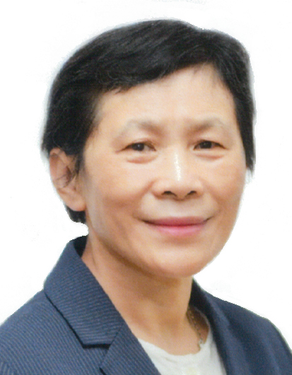

時代力量

時代力量（簡稱時力）是中華民國的政黨之一，為立法院的第四大黨。時代力量的政治取向為「中間偏左」，目標是在立法院扮演關鍵的改革勢力，提出「進步價值」、「公開透明」、「臺灣國家地位正常化」等主張。時代力量和民主進步黨外交與國防方面的政治主張相差不多，但時代力量希望能對民進黨進行有效的監督和制衡，在政治上更加堅守許多進步議題，並成為臺灣本土左派的捍衛者。
2015年1月25日，林峯正等人舉行時代力量創黨成立大會，由林昶佐擔任建黨工程隊總隊長。9月13日，時代力量正式宣布成立，黃國昌擔任首任執行黨主席。2016年第九屆立委選舉，時代力量獲得5席，組成立法院黨團會議，成為立法院第三大政黨。在2018年地方公職人員選舉中，時代力量在臺灣各地總共提名40名直轄市及縣市議員候選人，並有16人當選。2019年，時代力量改選決策委員會，由邱顯智當選黨主席。之後內部出現路線爭議，改由徐永明出任黨主席職務，但因徐永明2020年7月末捲入SOGO案，黨主席一職由邱顯智暫代。2020年第十屆立委選舉，時代力量在政黨票數上被臺灣民眾黨超越，立委席次降至3席，退居立院第四大黨。
現任黨主席:陳椒華

Back
GO TO FirstSection